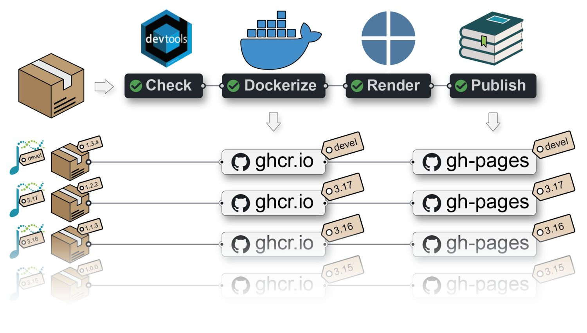

bash
docker run -it ghcr.io/js2264/biocbookdemo:devel RPackage: BiocBookDemo
Authors: Jacques Serizay [aut, cre]
Compiled: 2026-09-04
Package version: 1.11.1
R version: R version 4.6.1 (2026-06-24)
BioC version: 3.24
License: MIT + file LICENSE
BiocBooks?BiocBooks are package-based, versioned online books with a supporting Docker image for each book version.
A BiocBook can be created by authors (e.g. R developers, but also scientists, teachers, communicators, …) who wish to:
A {BiocBook}-based package hosted on GitHub with a branch named RELEASE_X_Y provides:
gh-pages branch;Both are built against the specific Bioconductor release X.Y.
A {BiocBook}-based package submitted to Bioconductor also lead to the online book being independently built by the Bioconductor Build System (BBS) and deployed to https://bioconductor.org/books/<bioc_version>/<pkg>/

BiocBook} package?The {BiocBook} package offers a streamlined approach to creating BiocBooks, with several important benefits:
BiocBook}-based package without leaving R;pages/*.qmd files using enhanced markdown;BiocBook}-based package to Bioconductor.The containerization and publishing of the new {BiocBook}-based package is automated:
BiocBooksWhen a {BiocBook}-based package is accepted into Bioconductor, it is automatically integrated into the Bionconductor Build System (BBS).
This means that it is getting built using R CMD build --keep-empty-dirs --no-resave-data .. This triggers the rendering of the book contained in /inst/. Book packages built by the BBS are then automatically deployed and are eventually available at https://bioconductor.org/books/<bioc_version>/<pkg>/.
A separate Docker image is built for each branch (named devel or RELEASE_X_Y) of a {BiocBook}-based Github repository.
Each Docker image provides pre-installed R packages:
X.Y;X.Y (listed in DESCRIPTION);The Docker images also include a python environment, named BiocBook, in which all the packages listed in requirements.yml are installed, and which reticulate picks up automatically in any R session started from the image (see 4 Executing python code).
For example, Docker images built from the {BiocBookDemo} package repository are available here:
👉 ghcr.io/js2264/biocbookdemo 🐳
You can get access to all the packages used in this book in < 1 minute, using this command in a terminal:
bash
docker run -it ghcr.io/js2264/biocbookdemo:devel RRegardless of whether the book package is submitted to Bioconductor, a Github Actions workflow publishes individual online books for each branch (named devel or RELEASE_X_Y) of a BiocBook-based Github repository.
For example, the online book version matching the devel version of the {BiocBook} package is available from:
An RStudio Server instance based on a specific Bioconductor <version> (devel or RELEASE_X_Y) can be initiated from the corresponding Docker image as follows:
bash
docker run \
--volume <local_folder>:<destination_folder> \
-e PASSWORD=OHCA \
-p 8787:8787 \
ghcr.io/<github_user>/<biocbook_repo>:<version>The initiated RStudio Server instance will be available at https://localhost:8787.
Further instructions regarding Bioconductor-based Docker images are available here.
This works was inspired by and closely follows the strategy used in coordination by the Bioconductor core team and Aaron Lun to submit book-containing packages (from the OSCA series as well as SingleR and csaw books).
This package was also inspired by the *down package series, including:
sessioninfo::session_info(
installed.packages()[,"Package"],
include_base = TRUE
)
## ─ Session info ────────────────────────────────────────────────────────────
## setting value
## version R version 4.6.1 (2026-06-24)
## os Ubuntu 24.04.4 LTS
## system x86_64, linux-gnu
## ui X11
## language (EN)
## collate C
## ctype en_US.UTF-8
## tz Etc/UTC
## date 2026-09-04
## pandoc 3.10.2 @ /usr/bin/ (via rmarkdown)
## quarto 1.9.38 @ /usr/local/bin/quarto
##
## ─ Packages ────────────────────────────────────────────────────────────────
## package * version date (UTC) lib source
## askpass 1.2.1 2024-10-04 [2] RSPM (R 4.6.0)
## base * 4.6.1 2026-08-27 [3] local
## base64enc 0.1-6 2026-02-02 [2] RSPM (R 4.6.0)
## BiocBook 1.11.1 2026-09-04 [2] Github (js2264/BiocBook@562ccc6)
## BiocBookDemo 1.11.1 2026-09-04 [1] local
## BiocGenerics 0.59.12 2026-08-11 [2] Bioconductor 3.24 (R 4.6.1)
## BiocManager 1.30.27 2025-11-14 [2] CRAN (R 4.6.1)
## BiocStyle 2.41.0 2026-04-28 [2] Bioconductor 3.24 (R 4.6.1)
## BiocVersion 3.24.0 2026-04-28 [2] Bioconductor 3.24 (R 4.6.1)
## bookdown 0.48 2026-08-28 [2] RSPM (R 4.6.0)
## boot 1.3-32 2025-08-29 [3] CRAN (R 4.6.1)
## brew 1.0-10 2023-12-16 [2] RSPM (R 4.6.0)
## brio 1.1.5 2024-04-24 [2] RSPM (R 4.6.0)
## bslib 0.12.0 2026-08-04 [2] RSPM (R 4.6.0)
## cachem 1.1.0 2024-05-16 [2] RSPM (R 4.6.0)
## callr 3.8.0 2026-06-05 [2] RSPM (R 4.6.0)
## class 7.3-24 2026-08-03 [2] RSPM (R 4.6.0)
## cli 3.6.6 2026-04-09 [2] RSPM (R 4.6.0)
## clipr 0.8.1 2026-05-25 [2] RSPM (R 4.6.0)
## cluster 2.1.8.3 2026-07-30 [2] RSPM (R 4.6.0)
## codetools 0.2-20 2024-03-31 [3] CRAN (R 4.6.1)
## commonmark 2.0.0 2025-07-07 [2] RSPM (R 4.6.0)
## compiler 4.6.1 2026-08-27 [3] local
## cpp11 0.5.5 2026-05-06 [2] RSPM (R 4.6.0)
## crayon 1.5.3 2024-06-20 [2] RSPM (R 4.6.0)
## credentials 2.0.3 2025-09-12 [2] RSPM (R 4.6.0)
## curl 8.0.0 2026-08-25 [2] RSPM (R 4.6.0)
## datasets * 4.6.1 2026-08-27 [3] local
## desc 1.4.3 2023-12-10 [2] RSPM (R 4.6.0)
## devtools 2.5.2 2026-04-30 [2] RSPM (R 4.6.0)
## diffobj 0.3.8 2026-07-17 [2] RSPM (R 4.6.0)
## digest 0.6.39 2025-11-19 [2] RSPM (R 4.6.0)
## docopt 0.7.2 2025-03-25 [2] RSPM (R 4.6.1)
## downlit 0.4.5 2025-11-14 [2] RSPM (R 4.6.0)
## dplyr 1.2.1 2026-04-03 [2] RSPM (R 4.6.0)
## ellipsis 0.3.3 2026-04-04 [2] RSPM (R 4.6.0)
## evaluate 1.0.5 2025-08-27 [2] RSPM (R 4.6.0)
## fansi 1.0.7 2025-11-19 [2] RSPM (R 4.6.0)
## fastmap 1.2.0 2024-05-15 [2] RSPM (R 4.6.0)
## fontawesome 0.5.3 2024-11-16 [2] RSPM (R 4.6.0)
## foreign 0.8-91 2026-01-29 [3] CRAN (R 4.6.1)
## fs 2.1.0 2026-04-18 [2] RSPM (R 4.6.0)
## generics 0.1.4 2025-05-09 [2] RSPM (R 4.6.0)
## gert 2.4.1 2026-08-19 [2] RSPM (R 4.6.0)
## gh 1.6.1 2026-07-20 [2] RSPM (R 4.6.0)
## gitcreds 0.1.2 2022-09-08 [2] RSPM (R 4.6.0)
## glue 1.8.1 2026-04-17 [2] RSPM (R 4.6.0)
## graphics * 4.6.1 2026-08-27 [3] local
## grDevices * 4.6.1 2026-08-27 [3] local
## grid 4.6.1 2026-08-27 [3] local
## here 1.0.2 2025-09-15 [2] RSPM (R 4.6.0)
## highr 0.12 2026-03-06 [2] RSPM (R 4.6.0)
## htmltools 0.5.9 2025-12-04 [2] RSPM (R 4.6.0)
## htmlwidgets 1.6.4 2023-12-06 [2] RSPM (R 4.6.0)
## httpuv 1.6.17 2026-03-18 [2] RSPM (R 4.6.0)
## httr 1.4.9 2026-09-01 [2] RSPM (R 4.6.0)
## httr2 1.3.0 2026-07-13 [2] RSPM (R 4.6.0)
## ini 0.3.1 2018-05-20 [2] RSPM (R 4.6.0)
## jquerylib 0.1.4 2021-04-26 [2] RSPM (R 4.6.0)
## jsonlite 2.0.0 2025-03-27 [2] RSPM (R 4.6.0)
## KernSmooth 2.23-27 2026-08-12 [2] RSPM (R 4.6.0)
## knitr 1.51 2025-12-20 [2] RSPM (R 4.6.0)
## later 1.4.8 2026-03-05 [2] RSPM (R 4.6.0)
## lattice 0.23-1 2026-08-12 [2] RSPM (R 4.6.0)
## lifecycle 1.0.5 2026-01-08 [2] RSPM (R 4.6.0)
## littler 0.3.23 2026-04-12 [2] RSPM (R 4.6.1)
## magrittr 2.0.5 2026-04-04 [2] RSPM (R 4.6.0)
## MASS 7.3-66 2026-07-15 [2] RSPM (R 4.6.0)
## Matrix 1.7-6 2026-07-25 [2] RSPM (R 4.6.0)
## memoise 2.0.1 2021-11-26 [2] RSPM (R 4.6.0)
## methods * 4.6.1 2026-08-27 [3] local
## mgcv 1.9-4 2025-11-07 [3] CRAN (R 4.6.1)
## mime 0.13 2025-03-17 [2] RSPM (R 4.6.0)
## miniUI 0.1.2 2025-04-17 [2] RSPM (R 4.6.0)
## nlme 3.1-171 2026-09-01 [2] RSPM (R 4.6.0)
## nnet 7.3-21 2026-08-03 [2] RSPM (R 4.6.0)
## openssl 2.4.2 2026-06-09 [2] RSPM (R 4.6.0)
## otel 0.2.0 2025-08-29 [2] RSPM (R 4.6.0)
## pak 0.11.1 2026-07-22 [2] RSPM (R 4.6.0)
## parallel 4.6.1 2026-08-27 [3] local
## pillar 1.11.1 2025-09-17 [2] RSPM (R 4.6.0)
## pkgbuild 1.4.8 2025-05-26 [2] RSPM (R 4.6.0)
## pkgconfig 2.0.3 2019-09-22 [2] RSPM (R 4.6.0)
## pkgdown 2.2.1 2026-07-07 [2] RSPM (R 4.6.0)
## pkgload 1.5.3 2026-06-15 [2] RSPM (R 4.6.0)
## png 0.1-9 2026-03-15 [2] RSPM (R 4.6.0)
## praise 1.0.0 2015-08-11 [2] RSPM (R 4.6.0)
## preprocessCore 1.75.1 2026-08-31 [2] Bioconductor 3.24 (R 4.6.1)
## prettyunits 1.2.0 2023-09-24 [2] RSPM (R 4.6.0)
## processx 3.9.0 2026-04-22 [2] RSPM (R 4.6.0)
## profvis 0.4.0 2024-09-20 [2] RSPM (R 4.6.0)
## promises 1.5.0 2025-11-01 [2] RSPM (R 4.6.0)
## ps 1.9.3 2026-04-20 [2] RSPM (R 4.6.0)
## purrr 1.2.2 2026-04-10 [2] RSPM (R 4.6.0)
## quarto 1.5.1 2025-09-04 [2] RSPM (R 4.6.0)
## R6 2.6.1 2025-02-15 [2] RSPM (R 4.6.0)
## ragg 1.5.2 2026-03-23 [2] RSPM (R 4.6.0)
## rappdirs 0.3.4 2026-01-17 [2] RSPM (R 4.6.0)
## rcmdcheck 1.4.0 2021-09-27 [2] RSPM (R 4.6.0)
## Rcpp 1.1.2 2026-07-05 [2] RSPM (R 4.6.0)
## RcppTOML 0.2.3 2025-03-08 [2] RSPM (R 4.6.0)
## rdtools 0.1.0 2026-07-16 [2] RSPM (R 4.6.0)
## remotes 2.5.0 2024-03-17 [2] RSPM (R 4.6.0)
## renv 1.2.4 2026-08-03 [2] RSPM (R 4.6.0)
## reticulate 1.47.0 2026-09-03 [2] RSPM (R 4.6.0)
## rlang 1.3.0 2026-07-05 [2] RSPM (R 4.6.0)
## rmarkdown 2.32 2026-09-01 [2] RSPM (R 4.6.0)
## roxygen2 8.1.0 2026-08-04 [2] RSPM (R 4.6.0)
## rpart 4.1.27 2026-03-27 [3] CRAN (R 4.6.1)
## rprojroot 2.1.1 2025-08-26 [2] RSPM (R 4.6.0)
## rstudioapi 0.19.0 2026-06-11 [2] RSPM (R 4.6.0)
## rversions 3.0.0 2025-10-09 [2] RSPM (R 4.6.0)
## sass 0.4.10 2025-04-11 [2] RSPM (R 4.6.0)
## sessioninfo 1.2.4 2026-06-04 [2] RSPM (R 4.6.0)
## shiny 1.14.0 2026-06-21 [2] RSPM (R 4.6.0)
## sourcetools 0.1.7-2 2026-03-28 [2] RSPM (R 4.6.0)
## spatial 7.3-19 2026-08-03 [2] RSPM (R 4.6.0)
## splines 4.6.1 2026-08-27 [3] local
## stats * 4.6.1 2026-08-27 [3] local
## stats4 4.6.1 2026-08-27 [3] local
## stringi 1.8.9 2026-08-04 [2] RSPM (R 4.6.0)
## stringr 1.6.0 2025-11-04 [2] RSPM (R 4.6.0)
## survival 3.8-11 2026-08-21 [2] RSPM (R 4.6.0)
## sys 3.4.3 2024-10-04 [2] RSPM (R 4.6.0)
## systemfonts 1.3.2 2026-03-05 [2] RSPM (R 4.6.0)
## tcltk 4.6.1 2026-08-27 [3] local
## testthat 3.3.2 2026-01-11 [2] RSPM (R 4.6.0)
## textshaping 1.0.5 2026-03-06 [2] RSPM (R 4.6.0)
## tibble 3.3.1 2026-01-11 [2] RSPM (R 4.6.0)
## tidyselect 1.2.1 2024-03-11 [2] RSPM (R 4.6.0)
## tinytex 0.60 2026-06-16 [2] RSPM (R 4.6.0)
## tools 4.6.1 2026-08-27 [3] local
## urlchecker 2.0.0 2026-07-08 [2] RSPM (R 4.6.0)
## usethis 3.2.1 2025-09-06 [2] RSPM (R 4.6.0)
## utf8 1.2.6 2025-06-08 [2] RSPM (R 4.6.0)
## utils * 4.6.1 2026-08-27 [3] local
## vctrs 0.7.3 2026-04-11 [2] RSPM (R 4.6.0)
## waldo 0.6.2 2025-07-11 [2] RSPM (R 4.6.0)
## whisker 0.4.1 2022-12-05 [2] RSPM (R 4.6.0)
## withr 3.0.3 2026-06-19 [2] RSPM (R 4.6.0)
## xfun 0.60 2026-07-09 [2] RSPM (R 4.6.0)
## xml2 1.6.0 2026-06-22 [2] RSPM (R 4.6.0)
## xopen 1.0.1 2024-04-25 [2] RSPM (R 4.6.0)
## xtable 1.8-8 2026-02-22 [2] RSPM (R 4.6.0)
## yaml 2.3.12 2025-12-10 [2] RSPM (R 4.6.0)
## zip 3.0.2 2026-08-04 [2] RSPM (R 4.6.0)
##
## [1] /tmp/RtmpopvETa/Rinst8e262e157d
## [2] /usr/local/lib/R/site-library
## [3] /usr/local/lib/R/library
## * ── Packages attached to the search path.
##
## ─ Python configuration ────────────────────────────────────────────────────
## Python is not available
##
## ───────────────────────────────────────────────────────────────────────────